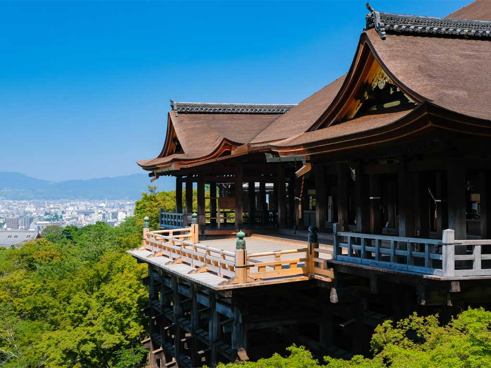
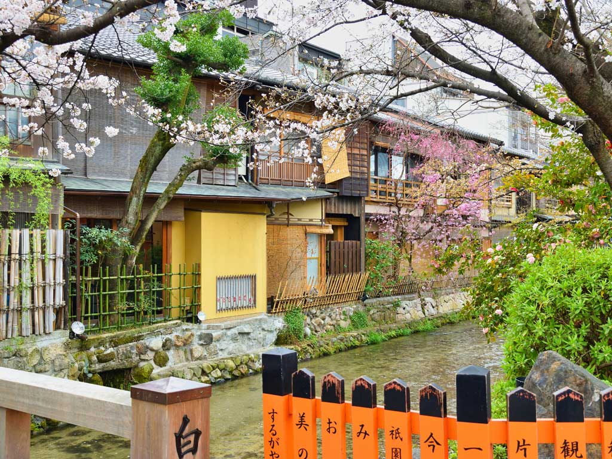
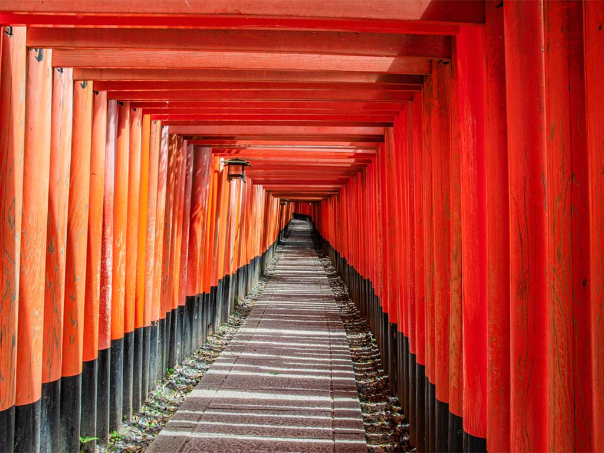
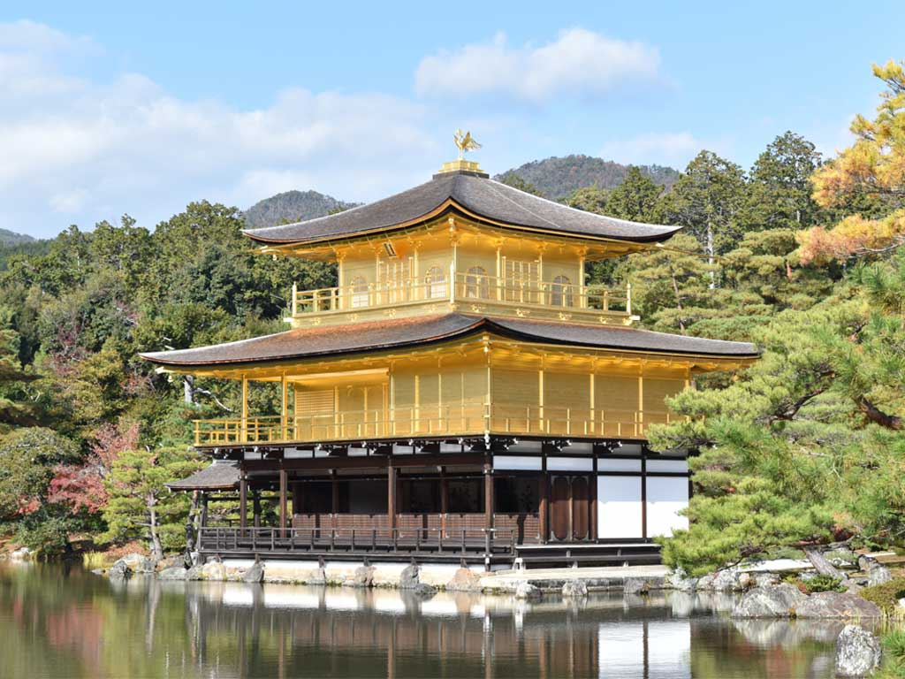
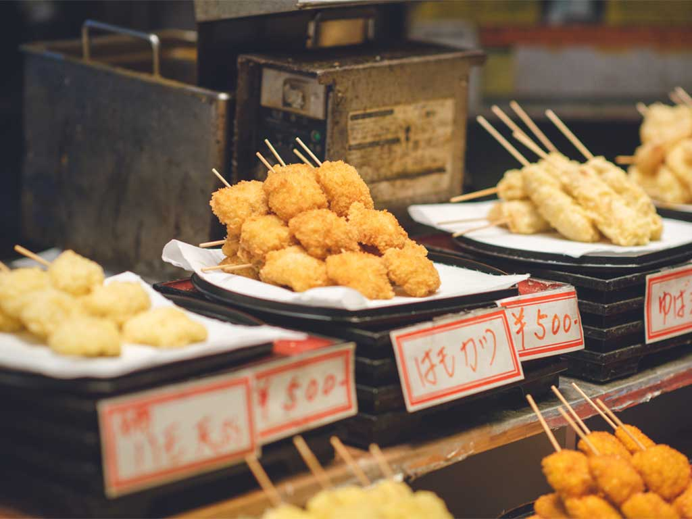

京都観光をもっとシンプルに
はじめてでも迷わない
京都観光
スポット選びから散策ルートまで、
快適な京都観光をサポートします。
初めての京都でも快適に観光できるよう、おすすめスポットや散策コースをわかりやすく紹介します。
おすすめのコースを見る京都観光をもっとシンプルに
初めての京都でも快適に観光できるよう、おすすめスポットや散策コースをわかりやすく紹介します。
おすすめのコースを見る京都を効率よく巡るおすすめの散策コースをご紹介します。
ここに散策コースの詳細な情報を記載します。
京都の魅力的なスポットをご紹介します。
ここにおすすめスポットの情報を記載します。

京都を代表する世界遺産の寺院。
清水の舞台から望む京都の景色が魅力。
自然豊かなエリア。
竹林や渡月橋などの見どころがある。

伝統的な街並みが残るエリア。
舞妓さんに出会えることも。

千本鳥居で有名な神社。
赤い鳥居が連なる幻想的な風景が広がる。

金色に輝く美しい寺院。
池に映る姿が絶景。

地元の食材やお土産が揃う市場。
食べ歩きも楽しめる。
快適に観光するためのポイントをご紹介します。
ここに快適に観光するための情報を記載します。
清水寺や伏見稲荷などの人気スポットは、朝の方が比較的ゆったり楽しめます。
東山や嵐山など、近いエリアをまとめて巡ることで移動疲れを減らせます。
京都は石畳や坂道が多いため、長時間歩いても疲れにくい靴がおすすめです。
鴨川や嵐山周辺で少し休憩を入れることで、最後までゆったり観光しやすくなります。
混雑する時間帯は、バスより電車移動の方がスムーズな場合があります。
12時前後は飲食店が混雑しやすいため、早め・遅めにすると入りやすくなります。